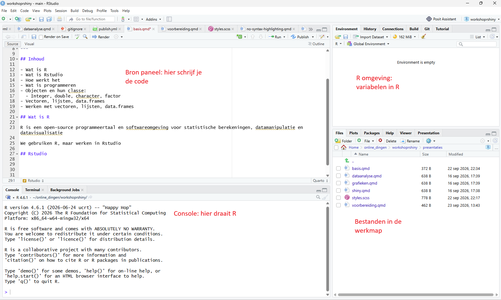
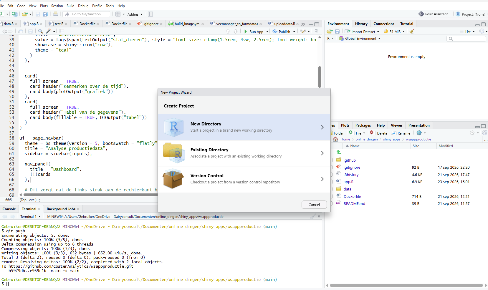
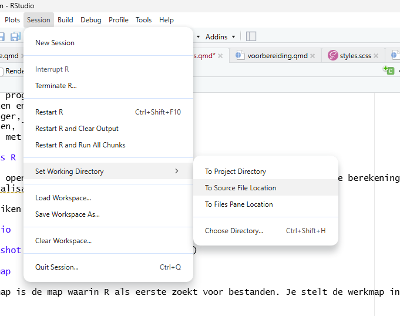
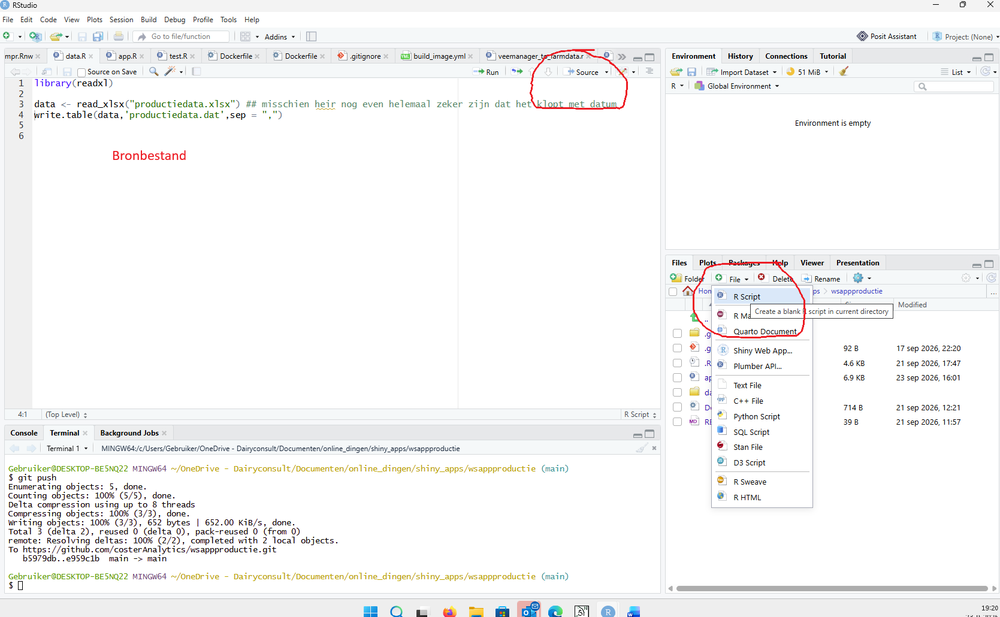

[1] 3[1] 0.5[1] 5[1] "Albart Coster"R is een open-source programmeertaal en softwareomgeving voor statistische berekeningen, datamanipulatie en datavisualisatie.
We gebruiken R, maar werken in RStudio.

Screenshot van RStudio
Het is verstandig om in projecten te werken. In dit geval maken we project rworkshop. Bij het aanmaken van dit project maakt RStudio een nieuwe map rworkshop aan, en plaatst daar het bestand rworkshop.Rproj in. Als je dit bestand aanklikt, opent RStudio meteen in de juiste werkmap.

Projecten
De werkmap is de map waarin R als eerste zoekt naar bestanden. Werk je in een project, dan is de werkmap automatisch goed ingesteld.
Werk je zonder project, dan stel je de werkmap in met Session/Set Working Directory/To Source File Location (of een andere keus).

Werkmap instellen
Je geeft R opdrachten in de vorm van code. Deze code kun je in de console intypen, maar het is verstandiger om code in een bronbestand te schrijven. Maak hiervoor een nieuw .R bestand aan in je werkmap. In dit bestand schrijf je R code, en R kan het bestand vervolgens uitvoeren.
Ctrl + Enter# zijn commentaar: R slaat ze over
Bronbestanden
<- operator, en kunnen daarna met de objecten werkenObjecten hebben een type. De belangrijkste zijn numeric, character, logical en factor. Met class() zie je het type.
code.R
[1] "numeric"[1] "character"[1] TRUE[1] "logical"[1] HF Jersey HF
Levels: HF Jersey[1] "HF" "Jersey"[1] TRUEvectoren en data.framescode.R
[1] 30 30 40 50[1] "dier1" "dier2" "dier3" "dier4" dieren productie
1 dier1 30
2 dier2 30
3 dier3 40
4 dier4 50[1] "dier1"[1] 30 30 40 50[1] "dier1"Met [ ] selecteer je elementen, op positie of met een voorwaarde. Dit gebruiken we later veel om data te filteren in Shiny.
In R worden operaties uitgevoerd met operators (zoals + en -) en functies (zoals sum() en mean()). Je kunt ook zelf functies maken.
code.R
[1] 2.666667gemiddelde sd
0.4985590 0.2849953 gemiddelde sd
495.3345 285.4083 Weet je niet hoe een functie werkt? Vraag de helppagina op:
De helppagina verschijnt in RStudio rechtsonder, in het tabblad Help.
R wordt uitgebreid met packages. Een package installeer je één keer, en laad je in elke sessie waarin je het gebruikt:
code.R
In deze workshop gebruiken we onder andere het package shiny.
lft met je leeftijdnaam met je naam en achternaam met je achternaamSys.Date() geeft de datum van vandaag, as.Date("1980-05-17") maakt een datumnamenlftsdata.frame mensen met twee kolommen, namen en leeftijden
leeftijden = lftsmensen is ouder dan 30?